Art on Stamp
Sheet as TOP 4 of All Stamps
Issued Worldwide Until 2001
|
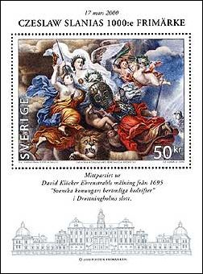 |
In the selection of 100 best stamps of the world (by Stamp Magazine), Slania's 1000th stamp is placed on the fourth place among all 360000 stamps issued worldwide. The sheet reproduces a work of the baroque painter David Kloecker Ehrenstrahl (1628-1698), and was issued by the Swedish P.A. on March 17, 2000. The ceiling painting named "The Wonderful Deeds of Swedish Kings", is located in the Drottningholm Caste, the residence of the Swedish Royal family. This is the only modern stamp in the top, the list being led by the One Penny Black issue, GB, 1840.Source: the magazine of Swedish Post, featuring new postal issues. Jan. 2002. |
Stamps Awarded in 2001
One of four stamps of Finland, appeared in a booklet, that were awarded with the International Award for the Philatelic Art shows the painting "The Transfiguration of Christ" by Frederic Westin (below on the right). The 11th Céres of Philatelie, that chooses the best French stamp of the year, went to the stamp "Peynet - Le kiosque des amoureux - Valence" by Annie Druet-Peynet (below on the left). A porcelain Russian Easter egg (around 1890) on a stamp of Liechtenstein was awarded the second price at the WIPA 2001.
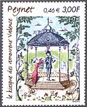 |
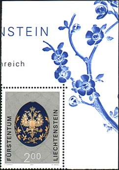 |
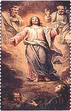 |
Stamp Awarded in 2000
The Slovak stamp creation has achieved the most significant success in its history. After two third places (in 1995 and 1998) in Grand Prix de l' Exposition WIPA in Vienna it has been awarded by the highest price. The Slovak postage stamp History of The Postal Law issued on December 18, 2000, appraised by the Minister of Transport, Posts and Telecommunications of the Slovak Republic as the most beautiful Slovak stamp of year 2000, was selected by a jury of the Vienna International Philatelic Exhibition WIPA as the most beautiful stamp issued in 2000 in the world. The stamp printed by a technology of five color recess printing from flat plates, designed by the outstanding artist Dušan Kállay, the University professor and academic painter, in an excellent transcription provided by Rudolf Cigánik, academic painter has acquired our first First place in the world competition GRAND PRIX DE L´ EXPOSITION WIPA, 2000 At the second place it was awarded a Belgian stamp issued to the 500 anniversary of the Birth of Carl the Fifth and at the third place it was Swedish stamp issued as the thousandth stamp of Czeslaw Slania. Interestingly enough, Slania's work will be chosen an year later as the Top 4 of all stamps issued worldwide till that year (see the top of this page).
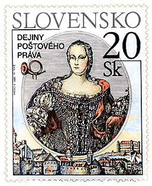 |
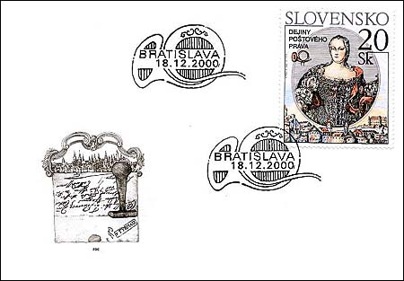 |
Stamps Awarded in 1997
|
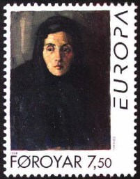 |
The German magazine Deutsche Briefmarken-Revue proposed to collectors of the whole world to choose the most beautiful stamps of Europe issued in 1996. The number of participants was of 14867, from 70 countries. For the first place the collectors have chosen the sheet from the set "Russia - Enamel from Hermitage Museum" (on the right) and the sheet "Austria - 1000 Years" (a half of it is shown below, in the middle). | 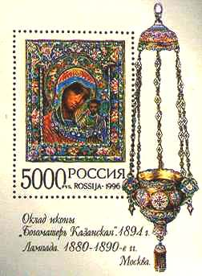 |
|
Wife of a Faeroe Seaman, 1996 |
On the third place came together Faeroe Islands (shown above, on the left) and The Netherlands (Vermeer sheet - shown below, on the second row from here, in the moddle).
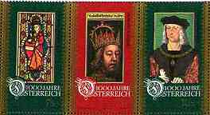 |
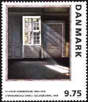 |
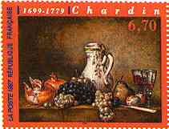 |
And the best 1997 stamp of Denmark, chosen by 3612 stamps collector, is a painting reproduction after J. F. Willumsen (below, on the left). On the third place is again another work of art, after V. Hammershoi (shown above, in the middle). In the same year in France we find on the second place the painting "Raisins et Grenades" by Chardin (above, on the right) and on the third place "Le pouce" by César (below, on the right). Enjoy, our topic is highly regarded by the juries and by the stamp collectors worldwide!
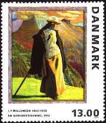 |
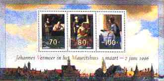 |
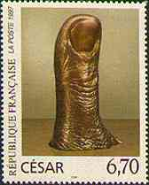 |
Grand Prix de l'Exposition WIPA 1998
Since 1980 the most beautiful stamps are awarded in Austria, Vienna with the "Grand Prix de l'Exposition WIPA" award. The jury members are stamps specialists, among them Museum Directors, The Director of the Austrian Printing Office, the Director of the P.A., Austrian artists, philatelic columnists, etc.
The Winners List:
- The most beautiful stamp in the world, 1998: San Marino, issued to commemorate the Italia '98 exhibition. Sculpture of Emilio Greco "The Young Lady".
- Second place: Czech Republic, Painting of Josef Navratil, "Weaver"
- Third place (ex aequo with a nice butterfly stamp from Australia): Slovak Republic, Painting of Martin Benka, "Landscape in Terchova".
Please notice that the art stamps continue to be very appreciated by specialists and by stamp collectors alike. (After Schweizer Briefmarken Zeitung, 3/2000, p. 156, Prof. R. Zimmerl).
An Awarded Stamp from Greenland
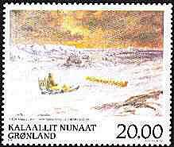 |
In a February 2000 poll for the best stamp of Greenland 1999, the winning stamp was the painting "Homecoming", painted by the Greenland painter Peter Rosing (1892-1965). The painting itself is from 1956, and tells about the sleigh-driver who comes home after a long day's hunting for food, and in the far horizon catches sight of his village Jakobshavn, bathed in the evening light. |
Grand Prix de l'Exposition WIPA 1999
|
The winners are:
|
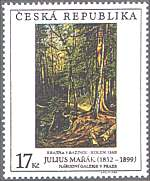 |